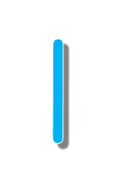
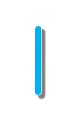

「華山文創園區」鄰近新光華商場，包含戶外藝文空間及室內展演空間兩部分。
是一個以藝文為主的專業場地，除了規劃功能多元的多館室、多元的排練、展演空間、親子園地等服務設施，
還有那廣闊開放的綠意空間更是華山1914文創園區最獨特也自豪的空間特色。
而華山1914為推廣國內文化、藝術、人文、教育亦提供四連棟、烏梅酒廠、紅酒作業場等100坪以上之空間；
車庫工坊、果酒倉庫、果酒禮堂、拱廳、高塔區研究股、高塔區品控股等100坪以下之空間；
還有千層野台、森林劇場、草原劇場、華山劇場、藝術大街、煙囪廣場等戶外空間，提供個人及團體申請租借。
【營業/開放時間】 每日開放。戶外空間24小時開放，其他則依各活動/店家公告知時間開放。
【費用簡介】 園區免費參觀。依各展覽主辦單位而定。
【大眾運輸】 搭乘板南線至忠孝新生站1號出口，步行約3分鐘，或善導寺站6號出口步行約5分鐘。


 
